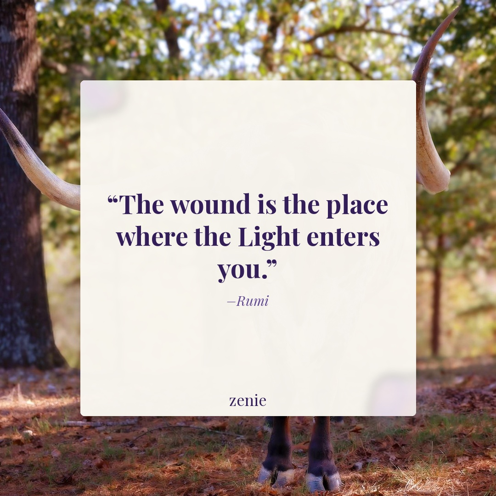
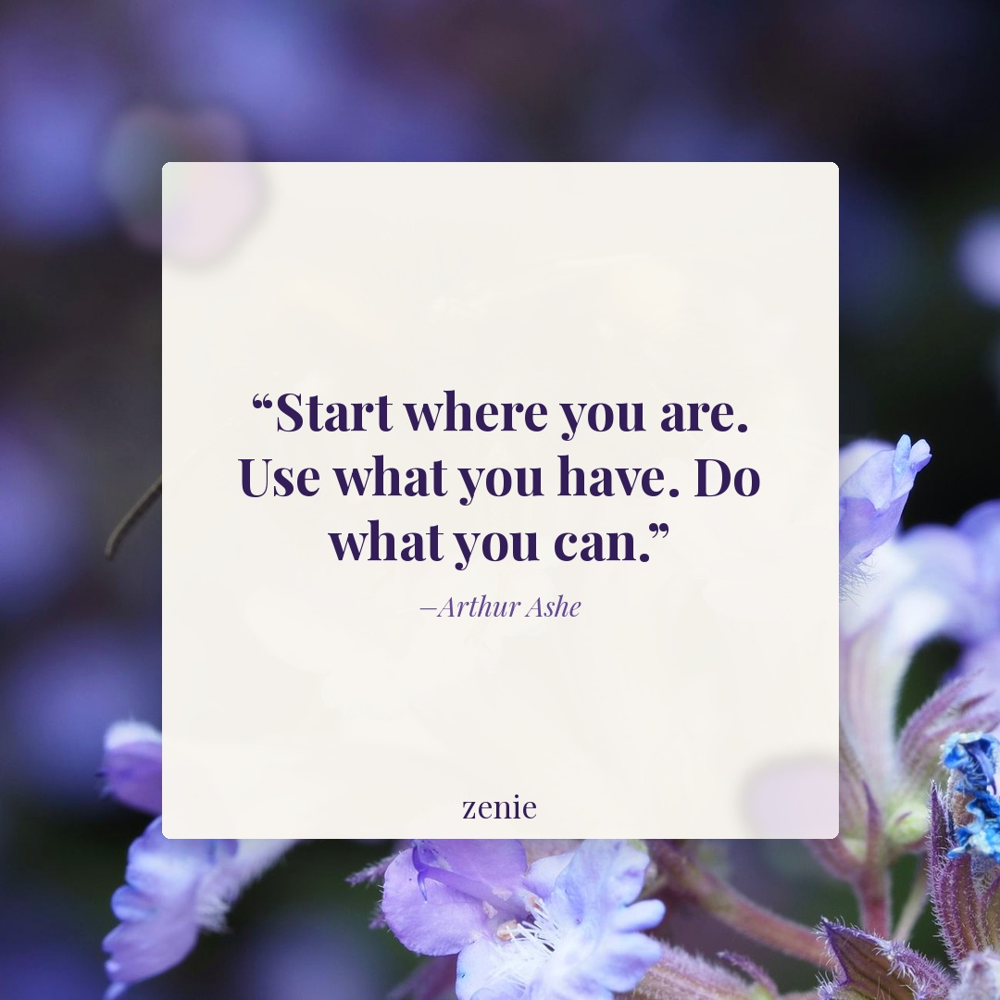

Meme 1
The internal debate is EXHAUSTING 😩
Best time: Monday 7 PM PST
The internal debate is EXHAUSTING 😩
Best time: Monday 7 PM PST
⏳ Rendered by GitHub Action from library clip kombucha_girl
IG: The internal debate is EXHAUSTING 😩
FB: Why is this so relatable though? 😂 We've all been here — talking ourselves out of and back into something at the exact same time. Tag a friend who needs to see this.
Best time: Monday 7 PM PST
The audacity… 💀
Best time: Wednesday 7 PM PST
⏳ Rendered by GitHub Action from library clip dead_inside_stare
IG: The audacity… 💀
FB: Okay but WHY is this the most relatable thing I've seen all week? 😅 Mixed signals are exhausting, ladies. Drop a 💀 if you've been here before.
Best time: Wednesday 7 PM PST
Creator: @journalingloud ⚠️ UNVERIFIED — confirm creator against the reel before posting
Take care of your mind — this journaling reel is the reminder we all needed. ✏️ Save for your next self-care evening.
Watch ReelIG caption: Credit: @journalingloud ⚠️ UNVERIFIED — confirm creator against the reel before posting | Take care of your mind — this journaling reel is the reminder we all needed. ✏️ Save for your next self-care evening.
FB caption: Credit: @journalingloud ⚠️ UNVERIFIED — confirm creator against the reel before posting | A little journaling goes a long way for your mental peace. 💜 When's the last time you truly sat with your thoughts? Drop a ✏️ if you journal regularly!
Best time: Tuesday 7 PM PST
Creator: @creator_unknown ⚠️ UNVERIFIED — confirm creator against the reel before posting
Self-care doesn't have to wait for the weekend — it starts with a single moment today. ☕️ What does your daily self-care look like?
Watch ReelIG caption: Credit: @creator_unknown ⚠️ UNVERIFIED — confirm creator against the reel before posting | Self-care doesn't have to wait for the weekend — it starts with a single moment today. ☕️ What does your daily self-care look like?
FB caption: Credit: @creator_unknown ⚠️ UNVERIFIED — confirm creator against the reel before posting | Self-care is not a weekend luxury — it's an everyday practice. ☕️ Even 5 minutes for yourself counts. What's your go-to daily self-care ritual? Share below 👇
Best time: Thursday 7 PM PST

⏳ Rendered by GitHub Action (regenerate_quotes.py)
"The wound is the place where the Light enters you." — Rumi
FB caption: This one hit different today. 💜 Sometimes what we've been through is exactly what opens us up to something more beautiful. Save this for a moment when you need a reminder. ✨
Best time: Friday 1 PM PST

⏳ Rendered by GitHub Action (regenerate_quotes.py)
"Start where you are. Use what you have. Do what you can." — Arthur Ashe
FB caption: Simple. Powerful. True. 💜 You don't need everything figured out to take the next step — just begin right where you are. What's one thing you're doing for yourself today? Share below 👇
Best time: Saturday 11 AM PST